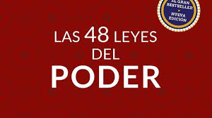

Rompe la barrera del no

Sinopsis: El prestigioso ex negociador internacional del FBI Chris Voss, especializado en secuestros con rehenes, nos enseña un método de negociación rompedor: tácticas para negociaciones duras que son aplicables en múltiples aspectos de nuestras vidas
Ver Pelicula
Las 48 Leyes del Poder

Sinopsis: Las 48 leyes del poder —título en inglés: The 48 Laws of Power— es el primer libro del escritor estadounidense Robert Greene, publicado originalmente en 1998. El libro es una especie de guía diseñada para mostrarle al lector cuáles son las cualidades personales que se deben de tener para alcanzar
Como ganar amigos

Sinopsis: El principio más importante para ganar amigos e influir en otros es ser amable. Para poder ser amable, necesitas evitar las críticas, la condenación y las quejas sobre otra persona. En vez de juzgar a las personas debes colocarte en sus zapatos y comprender por qué hacen lo que hacen
Ver Pelicula